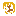

FAVOURiTE SiTEZ
+
_
X
i hate everything!
BUTTONS!
any glowing buttons indicate that a website may contain mature content, such as excessive blood/gore. basically, if it breaks instagram tos, it won't be here (even though content that breaks instagram tos is frequently kept up on ig, but you get the point). Note that I will NEVER link to websites with adult content on them. If a website here contains adult content, email me immediately and I will remove it from this page ASAP.
UNCATEGORiZED


OLD WEB
im going to be honest, 95% of the people using neocities were never alive during early web, me included

ARTiSTS
websites with a lot of art in them. this doesn't do a good job at describing this category but trust me you'll quickly get the vibe


UNiFORM RESOURCE LOCATORS
noooo! how am i going to want to visit a site without any flashy pictures?!?!?
ViDEO GAMES AND iNTERACTiVE WEBTOYS!!!
 |
Your World of Text | Infinite text grid that anybody can edit |
 |
e4494s | Simulators, generative art, games, and some other math related stuff. Highly recommend this one. |
 |
Infinite Craft | Little Alchemy, but with AI, so you can make anything. Fun to see how goofy of things you can make. |
ART/DESIGN
| Mesh | 4 cornered gradient generator with distortion tools |
ARTiSTS
|  | dhampyr |
DEVTOOLS
tools for developing your own websites or just useful programming tools in general.
 |
Material Theme Builder | i really like how colors in material 3 looks, so i used this alot. its good for choosing colors for your site |
| CSS Glass | Blurred background effect generator. Only really useful if you're new to CSS. | |
| Google Teachable Machine | Allows you to train your own basic pattern recognition (e.g. cat or dog) AI using your own training data |
TECH
| Nathan's Toasty Technology page | Cool screenshots of various operating systems | |
| GUIdebook Gallery | A gallery of various GUI interface elements from many different operating systems | |
| Infinite Mac | A Mac computer you can use in the browser, all the way up to Mac OS 9.0 |
MUSiC
| Gnoosic | Put in 3 artists you like and it will give you more artist recommendations | |
| Every Noise at Once | Chart of how Spotify groups how similar genres are, as well as A LOT of useful other tools. No longer updated due to Spotify staff layoffs | |
| xmplaylist | Recently played songs on each SiriusXM station. If you still use SiriusXM for some reason, really useful | |
| Rate Your Music Random Release | Gives you a random album from the entire Rate Your Music database |
last.fm
| Last.fm stats | By far the best website for last.fm stats. It has an overwhelming amount of information and graphs | |
| last.fm Live | Dashboard showing a grid of what you and your last.fm friends are listening to |
PERSONAL PAGES
would you look at that, there are noen
MiSC
 |
Consumer Aesthetics Research Institute | A database of actual aesthetics, none of that "Frutiger Metro" or "webcore" crap. |
| twc classics | Many old screencaps and videos of The Weather Channel. | |
| This website is so crazy. You can type in almost anything and instantly find related images and websites. | ||
| Teletext Archive | Full interactive archive of teletext pages from around the world |
BLOGS/SOCiAL MEDiA
| One Terabyte of Kilobyte Age | Tumblr blog that automatically posts screenshots from random sites on the Geocities archive | |
| Supper Mario Broth | Tumblr blog that posts obscure information about the Mario franchise. HIGHLY recommend this one. They also have a Twitter with more. | |
 |
depths of wikipedia | Interesting facts about Wikipedia history, as well as out of context screenshots |